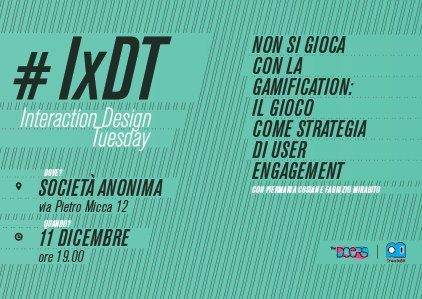
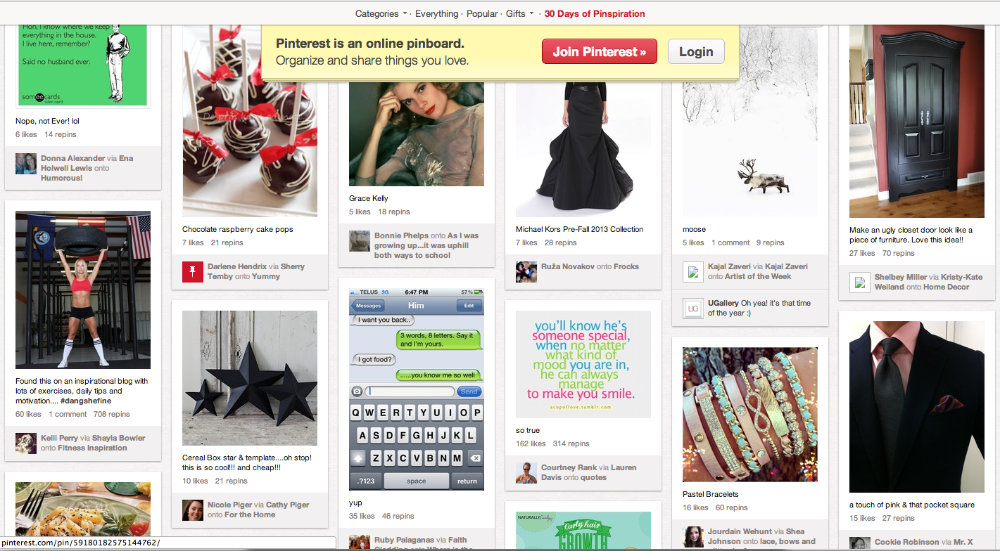
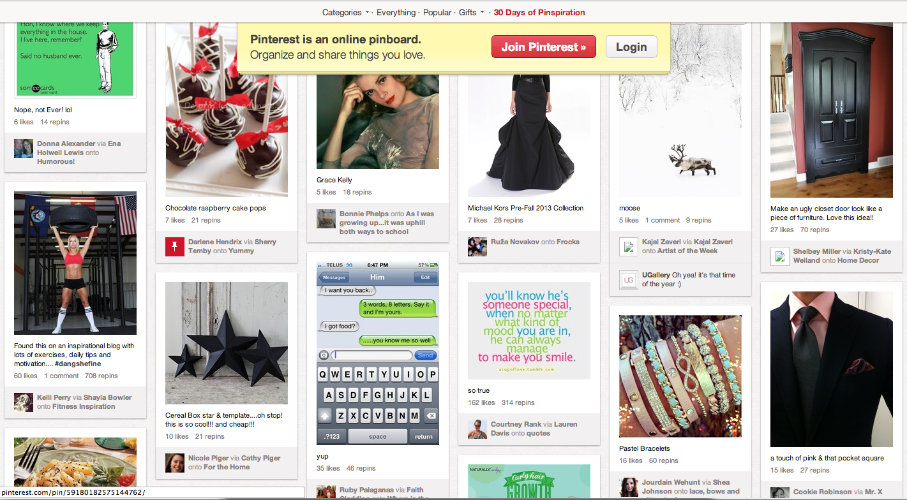
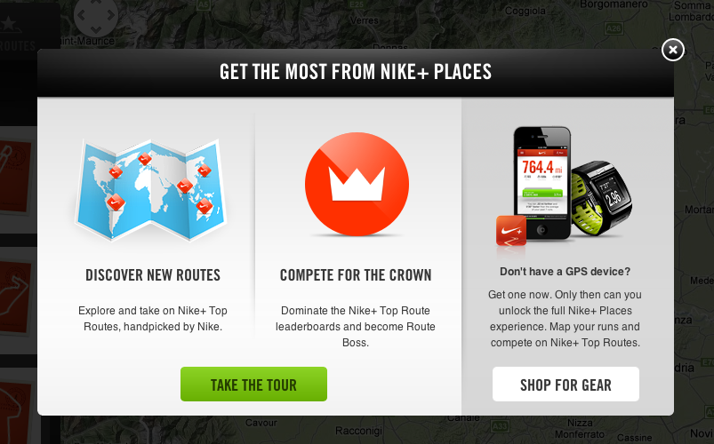
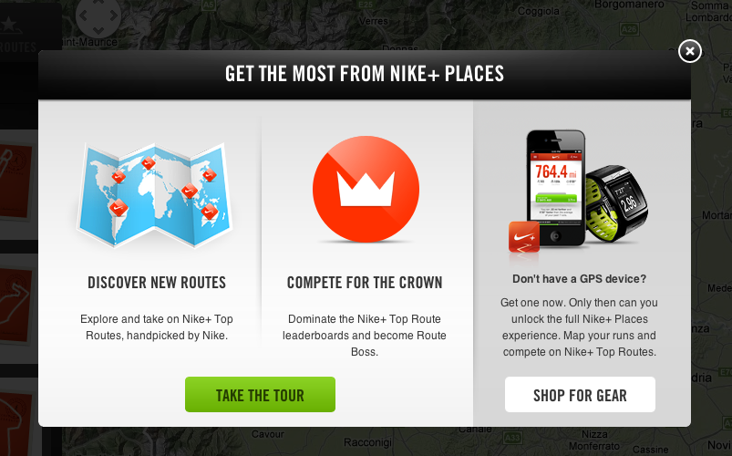
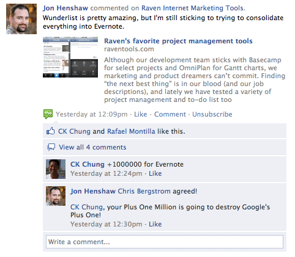
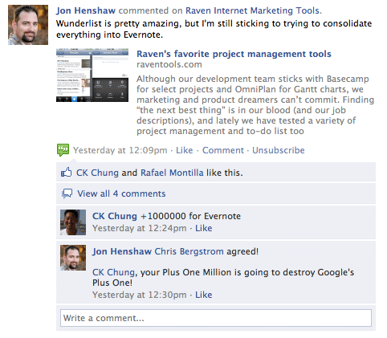

WHAT THE HELL ARE WE DOING HERE?
GOOD QUESTION!
“Ciao Pier, Io e Stefano ci domandavamo se possiamo fare della gamification su tacatì o se è solo cosa da social network e adolescenti. Possono esserci spunti interessanti per noi all’evento dell’11?”
HERE YOU GO…
GAMES


HERE YOU GO….
GAMES?
 
 


GAME’S TRIGGERS
GAMIFICATION
Jane McGonigal + goal + rules + feedback + voluntary participation
“Playing a game is the voluntary attempt to overcome unnecessary obstacles.”
Bernard Suits, The Grasshopper: Games, Life and Utopia.

GAMIFICATION FLOW ZONE
BETWEEN BOREDOM AND BURNOUT
Design challenge
To design a system of feedbacks suitable to trigger positive feelings and happiness
“we feel happy if we liven up our time, rather than kill it”
Game vs depression.
“Attention, gratification, motivation and memory.”
Activation of neurological and physical systems.
“No pressure nor fatigue.”

GAMIFICATION
FEEDBACKS ARE KEY
Internal
Are intimate part of the user experience
Infinite flow vs interruption (win / lose)
Social connection
Serendipity
“Virality is build in products”
Seth Godin
External
points levels challenges leaderboards rewards / badges ....
EXTERNAL FEEDBACKS - EXAMPLE
CROWDFUNDING PLATFORM FOR SOCIAL PROJECTS
Explored game mechanics: SAPS
Status Access Power Stuff
Status: X factor

Access: Categorization by size

From local to global 
Power: Red Button

Stuff: Step by Step

EXTERNAL FEEDBACKS - EXAMPLE
CLASSICS
The boyscout and the army

 
 
Precius metal market


Stage of mastery

GAME BEHAVIOURS AND PERSONA
KILL THE SOCIALIZERS
Bartle’s player types Killers (20%) Socializers (80%) Explorers (50%) Achievers (40%)
Example! SoccerSquare
A game with improvable gamification (before redesign!) 
After redesign


EXTERNAL FEEDBACKS AND …
BUSINESS MODEL
 Gamification based advertising model
Gamification based advertising model
FROM EXTERNAL TO INTERNAL TRIGGERS
ANSQUARE!

FROM EXTERNAL TO INTERNAL TRIGGERS
PINTEREST?

INTERNAL TRIGGERS
PINTEREST IS LIKE TETRIS!
Pinterest vs tetris
No win
Infinite flow
Mosaic layout
Infinite scrolling
Social discovery
Serendipity

INTERNAL TRIGGERS
UNCONVETIONAL VIEW
Would you prefer a retweet or a Foursquare badge?
 
 
Contatti: fabrizio@mirabito.it we@thedoersproject.com
TWITTER @fmirabito
WEB ansquare.com
thedoersproject.com